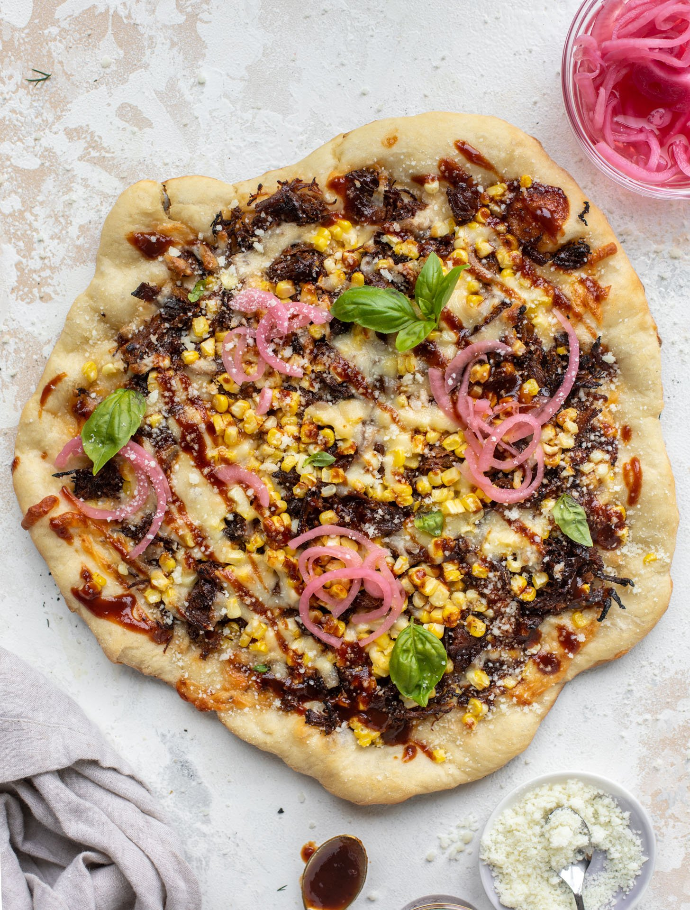

A very easy way to make a delicious BBQ pork pizza in minutes!
Preheat oven to 425 degrees F (220 degrees C). Grease a 9x13 inch baking pan.
Roll the dough out into the prepared pan. Top the dough with the barbecued pork. Sprinkle with the red onions, and layer on the dill pickle slices. Sprinkle mozzarella cheese evenly over the top.
Bake in the preheated oven until crust is golden and cheese is melted, about 18 minutes.